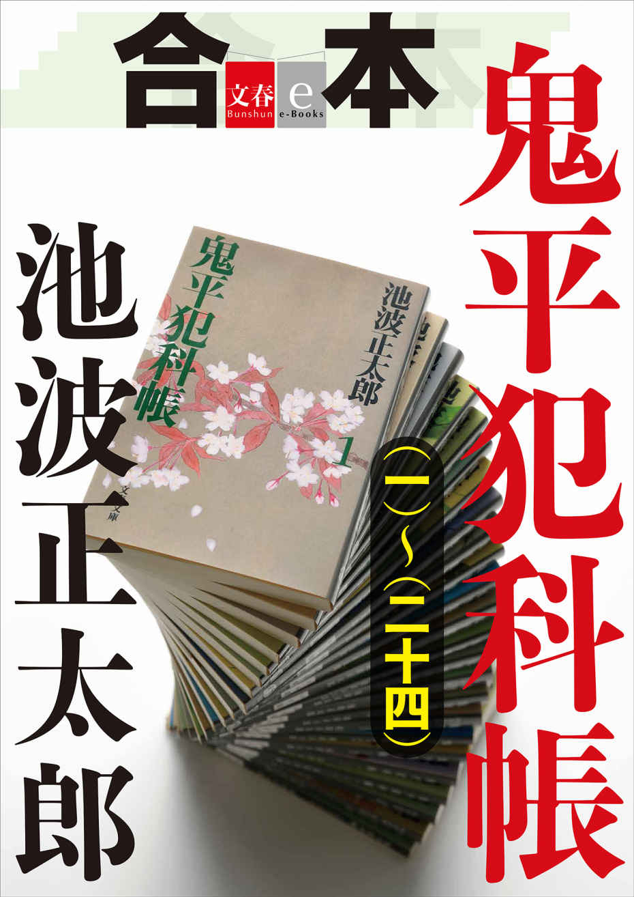

| 鬼平犯科帳「血頭の丹兵衛」【文春e-Books】 | |
| 池波正太郎 | |
文春ｅ‐Ｂｏｏｋｓ
鬼平犯科帳「血頭の丹兵衛」
池波正太郎
＊この電子書籍は縦書きでレイアウトされています。
＊読む際のご注意、お断り等についてはこちら をお読み下さい。
血 頭 の丹 兵 衛
一
長谷川平蔵が、五カ月ぶりに、清水門外の役宅へあらわれ、牢 屋 へも顔を見せると、
「長谷川さま。また、おもどりでございますね」
暗い牢内に、只ひとりで暮していた小 房 の粂 八 が声をかけてきた。
素 直 に敬愛の念がこもった彼の声をきき、平蔵は、
（おや......こやつ、おれを悪くおもってはいないらしい）と、感じた。
特別警察ともいうべき火 付 盗 賊 改 方 ・役宅内の牢屋であるから、およそ十坪のそれ を三つに仕切ってあるだけの小さなものである。
いま、ここに押しこめられているのは、小房の粂八ひとりであった。
「粂。元気かえ」
牢 格 子 からのぞきこむ平蔵へ、
「よく、帰っておくんなさいましたね。長谷川さまが盗賊改メの御 頭 をおやめになったときいて、この五カ月というもなあ、この首が今日飛ぶか、明日飛ぶかと、いえもう、びくびくもんでございましたよ」
「やはり、生きていたいか？」
「ばかなことで......こうして御牢内におりますと、めっきり、気が弱くなります」
「ま、もう少し入っていろ」
助命を約束し、野 槌 の弥平一味の隠 れ家 を白 状 させた粂八だけに、うまくゆけば〔密偵〕としてはたらかせて見ようか......という気もちが平蔵にあって、
「とにかく、いましばらくは牢内に......」
と、自分が解任された後、盗賊改方の長官に就任した大崎源四郎へ、平蔵はくれぐれも粂八の身柄をたのんでおいたのである。
「粂八」
「はい......？」
「いまな、泥棒の風上にもおけぬひどい 奴が、江戸市中を荒しまわっているぞ」
「ききましてございますよ、へえ......御牢番方 が毎日のようにうわさをしておりますのでね」
粂八の顔に、奇妙なうす 笑いがうかんだのを、平蔵は見のがさなかった。
（粂八は、知っているらしい）
その、泥棒の風上にもおけぬ怪 盗 をである。
この怪盗、名を血 頭 の丹 兵 衛 という。
〔血頭〕の異 名 については定 かでないが、その犯行のすさまじさは言語に絶するものがあったそうな。
十余名におよぶ手下をしたがえ、黒装 束 に身をかため、突風のように手段をえらばず、富裕な商家を襲 い、いきなり二、三人を斬 殺 しておいてから、
「手前も、こんなざま になりてえか」
主人を脅 して蔵 の鍵 を出させ、金 品 をうばいとるや、主人はじめ奉公人の一人をも逃さず、皆殺しにして引きあげてしまうのだ。
「泥棒の質 も落ちたものだ」
と、目白台の自邸へ帰っていた長谷川平蔵は顔をしかめ、
「ちからまかせの押しこみ強盗なら、悪党であれば誰にでも出来る。女を犯 し、人を殺すというのは、真 の盗賊のなすべき業 ではないのだ」
吐き捨てるようにいった。
あの〔小川や梅吉〕の処刑がすんでから間もなく、平蔵はいったん、盗賊改方を解任されている。
ときに、老 中 筆 頭 として将軍を補 佐 し、幕府政治の最高権力者であったのは奥州・白河十一万石の藩主、松 平 定 信 である。
長谷川平蔵は、かねて、この少 壮 老中から目をかけられていたらしい。
先年。いわゆる〔賄 賂 政治〕の呼び声をたかめた老中の田沼意 次 政権が倒れ、田沼が失脚すると共に、松平定信政権がこれにかわった。
定信は、うちつづく天災や飢 饉 の後に起った人 心 の荒 廃 と経済危機を、武家と農村との結合による〔質実剛健〕な本 来 の武家政治のすがたにもどすことによって切りぬけようとしている。松平定信が平蔵を先 手 組 へもどしたのも、別の役目へ昇進させ、大いにはたらかせようとのねらい があったわけだ。
平蔵の後任者として盗賊改方となった大崎源四郎は実直な人物であるが、ここ数カ月にわたる怪盗・血頭の丹兵衛の跳 梁 には手をやくばかりであった。町奉行所も盗賊改方も、この怪盗の神 出 鬼 没 ぶりには煮湯をのまされつづけてきている。
血頭一味の盗みは、盗賊仲間でいう〔急ぎ盗 〕というやつで、短期間に盗めるだけ盗み、すばやく他国へ消えてしまおうというやりくちだ。日本橋辺の商家へ押しこんだと思うと、次は、何と武州・熊谷 宿 の旅籠 〔ふせや半蔵〕方へあらわれ、泊り客の財布から〔ふせや〕の金箱までうばいとり、このときの殺傷十八名におよんだ。
さらに十日後、今度は、またも江戸へ舞いもどり、下谷・上野町の鼈 甲 小間物問屋・和泉屋幸助方へ潜入し、殺傷の血飛沫 をあげて金二百十余両を強奪している。
次は、目黒の谷山村の豪農を襲撃するという始末であった。
たまりかねて、当局が、
「長谷川平蔵を盗賊改方へもどせ」
と、いうことになった。それで大崎源四郎は解任となり、平蔵はこの年の十月二日に、ふたたび清水門外の役宅へ入ったのである。
牢屋での粂八と平蔵へ場面をもどそう。
「血頭の丹兵衛という......お前、そやつの名をきいたことがあるかえ？ あるらしいな」
「あるにもなんにも......仲間うちでは金 箔 つきの親分 でございます」
「ほ。そうか......」
「けれども長谷川さま。その、いま御ひざもとを荒しているやつは、にせものの血頭の丹兵衛でございますよ」
「何......？」
「本物の丹兵衛なら、そんな、むごたらしいまねは、お日さまが西から出てもいたすもんじゃあございません」
「お前、知っているのか、本物を......？」
「十九のときまで、お世話になっておりました」
「そうか。お前、丹兵衛の手下だったのか......」
「なにしろ、長谷川さま......そうだ忘れもしねえ。岡崎の御城下で吉野屋千助という物持ちへ押しこみましたときにね、わっしが台所で、飯たき女を、ついつい嬲 ったところ、親分はもう大変な怒りようで......へい。それでまあ、破 門 というやつ......血頭の親分から縁切りをいいわたされましたので」
「ふうむ......」
「血頭の親分とは、つまりそうしたお人なので、ですから、にせものでございますよ。いま、あばれまわっているのは......」
「だが、引き上げて行ったあとには、血頭丹兵衛と焼 印 うった木 札 を、かならず残してあるというぞ。お上 をないがしろにするふとい奴だ」
「......そこのところだけは、本物の通りでございますがね」
冷え冷えと、晩秋の夕闇が抱きすくめている牢内で、小房の粂八はひげの伸びたあごをなでながら、苦 味 のきいた顔 貌 をくもらせ、だまりこんでしまった。
二
それから三日目。
麹町三丁目の紙問屋・万 屋 彦左衛門方が、またも血頭一味に襲われた。
このところ、江戸市中の商家は用心の上にも用心をしていたわけであるが、怪盗一味は万屋の大屋根を巧 みに破って潜入し、血なまぐさい所業を飽 くことなくやってのけ、百二十余両を強 奪 して逃走してしまった。
このとき、背中に重傷を負いながら、万屋の次女のこう というむすめが、死体をよそおい、引き上げて行くときの怪盗一味の会話を小耳にはさんだ。黒覆 面 の中の面 体 はわからぬながら、首領とおぼしき男が、
「これで江戸ともおさらばだ。いいか、みんな。あつまるところは島田宿 」
と、手下どもにいったのが、
「たしかに、きこえました」
と、こうは駈けつけた長谷川平蔵に告げた。十八歳というが気丈なむすめで、彼女は重傷にもめげずに、
「どうぞして、両親の仇を討って下さいませ」
怒りに声をふるわせたものだ。
平蔵も、すぐさま町奉行所の協力をもとめ、江戸府内から外へ通ずる道という道へ網 を張ったが、まんま と逃げられてしまい、血頭一味の只ひとりも捕えることは出来なかった。
その夜......。平蔵が、ひとり役宅の牢屋へあらわれると、小房の粂八が、
「長谷川さま。また逃げられたそうで......」
「また、牢番がしゃべっているのをきいたか」
「へい」
「粂よ」
平蔵が牢格子へ顔を近寄せ、万屋のむすめが耳にした怪盗のことばをささやくと、粂八の顔 色 がたちまちに緊迫し、
「ふうむ......あつまるところは、島田宿とね......」
「こころ当りがあるか？」
「ございません」
きっぱりと、粂八がこたえた。
（こいつ、むかしの親分 をかばいだてしているのか......？）
しかし、粂八は「にせもの」だといいきっている。それなら何も、かばいだてすることもあるまい。平蔵の推 考 が目まぐるしく変転しはじめたときであった。
「長谷川さま......」
小房の粂八が、ぐい と内側から牢格子へ顔をさしつけてきて、
「血頭丹兵衛の名をかたるにせものの化けの皮をひんむいて やりてえと思います」
押しころしたような声で、一気にいったものである。平蔵は、粂八を凝 視 した。
生き残った一匹の虫のか細い声が、牢屋のどこかでしている。
「よし」
長谷川平蔵の決意は、ここに牢 固 たるものとなったようだ。
「さぐって見てくれるか」
「はい」
「しかし、お前が盗賊改方の密偵となることは、盗賊仲間から見れば汚 らわしい狗 となることだぞ」
「ですが、わっしには恩義のある血頭の大きな名をかたる野郎をそのままにしてはおけねえ。これも仲間内の掟 でございますよ」
「なるほど」
「この御用がすみ次第、わっしは、ここへもどってまいります。このことだけは、はっきりといま、長谷川さまに御約束いたしておきますぜ」
「よろしい」
うなずいた平蔵が、
「だがな粂八。野槌の弥平一味のうち、ほとんどは捕えて仕置きしたが、まだ三、四名、逃げ終 せた者もいる。もしも、こやつどもの眼に、娑 婆 へ出たお前の姿がとまったなら......」
粂八の白状によって野槌一味が捕えられ、そのかわりに助命されたという秘密の一事が感づかれようことは必然であった。
そうなれば、彼らが粂八へあたえる制 裁 の凄 さがどのようなものか......むろん、粂八のいのちはない。
「わかっております。が、わっしも小房の粂八だ。まさかに見つけられることもござんすまい」
粂八は、不敵に笑って、
「それよりも何よりも、わっしは、にせものをこらしめてやらねえじゃあ、おさまりませぬよ」
翌朝になると、小房の粂八のすがたは、役宅内のどこにも見えなかった。
このことについて、盗賊改方一同に、きびしい緘 口 令 が発せられたことはいうまでもない。粂八は、長谷川平蔵がととのえてくれた道中手 形 をもち、浅草並木町の料理屋〔宇治橋や〕方の料理人が伊勢詣 りに行くという名 目 で、東海道を上って行った。
目ざすは、江戸より五十二里九丁、東海道・島田の宿場である。
三
小房の粂八は、両親の顔を知らぬ。
雪ぶかい山村の、小さな家に、彼が「おん婆 」とよんだ老婆と共に暮していたことだけは、はっきりとおぼえている。次の印象は、この「おん婆」と共に、ながいながい旅をしているときの空腹と疲労と、さらに「おん婆」が夕闇の街道に打ち倒れ、ぴくり ともうごかなくなってしまったときのことだ。
「わっしが、五つか、六つごろのことだと思いますよ。その、おん婆は、どうも、わっしの本当の祖母 のような気がするのでございますがねえ」
と、粂八は長谷川平蔵に洩 らしたことがある。
そのときの自分の泣声だけはおぼえているのだが、その後のことは模 糊 としている。
行き倒れた「おん婆」に取りすがって泣きわめいていた彼をだれかが、どこかへ連れていったことだけはたしかで、以後は粂八、転々として諸方をわたり歩いた。
「中には親切な人もいたのでございましょうが、とにかく物心ついてからは、もう売り飛ばされて経 めぐり歩いたもので......」
結 句 、大坂を根 拠 とする見世物芸人・山 鳥 銀 太 夫 一座で、粂八は少年ながら綱渡りの芸を見せていたという。
「両親の顔もしらねえということは、人間の生活 の中に何ひとつ無 えということで......それからのわっしが悪 の道へふみこんで行った経緯 についちゃあ、いちいち申しあげるまでもござんすまい」
平蔵にこうのべた粂八は、それだけに、長谷川平蔵が盗賊夫婦（助次郎・おふじ）の子に生まれて孤児となった赤子のお順を事もなげに養女としたことを知るや、ひどく感動してしまったらしい。
現 代 は人情蔑 視 の時代であるから、人間という生きものは情智ともにそなわってこそ〔人〕となるべきことを忘れかけている。情 の裏うちなくしては智性 おのずから鈍 磨 することに気づかなくなってきつつあるが、約二百年前のそのころは、この一事、あらためて筆 舌 にのぼせるまでもなく、上流下流それぞれの生活環境において生き生きと、しかもさりげなく実 践 されていたものなのである。
小房の粂八が〔血頭の丹兵衛〕の正体をあばいてくれようと、盗賊としての血をわかせたことは事実だが、その背後には、長谷川平蔵の〔御役〕のために一肌ぬごうという、平蔵への好意がうごいていたことは否 めまい。
さて......。
駿 河 の国・島田の宿場へ入った粂八は、五丁目の旅籠 〔鈴や紋十〕方へ草鞋 をぬいだ。
「伊勢詣りの連れ が追いつくまで、逗 留 しますよ」
と、いうふれこみ であった。
そのころ、江戸では......。
またも、血頭の丹兵衛が一仕事やってのけた。
「まだ、江戸に潜 んでいたのか、不敵なやつめ！」
長谷川平蔵は激怒したが、いざ、犯行の跡をしらべて見るや、
（これは......？）
首をひねってしまった。
襲われた家は、芝口二丁目の書籍商・丸屋徳四郎で、丸屋は和漢洋の書物を諸大名家へも入れているほどの有名な店だが、蔵に金がうなっているわけではない。
盗んだ金は、わずかに四十余両。
それはよいのだが、この金が、いつ盗まれたものか、丸屋方では主人はじめ奉公人一同、まったく知らなかった。一夜のうちに、足音もたてず、手 口 も見せず、風のようにながれ入って来て金を盗み、だれに気づかれることもなく逃げ去ったのである。したがって、この夜の血頭は一人の血をも流してはいない。まるで別人のような〔やりくち〕なのだが、主人夫婦の寝間の隠し戸棚にあった金箱が消えた、その場所に〔血頭丹兵衛〕の焼印うった木札が例のごとく、これ見よがしに残されていたのだから、さすがの平蔵も、わからなくなってしまった。
「ともかく、このことを粂八に知らせい」
平蔵は、すぐさま同心・酒井祐 助 を島田宿へ走らせた。
これより先、粂八の後から、与力・同心・小者など合せて十名が、島田へ向って先発している。
粂八が、血頭一味を発見したときは、すぐさま、これを逮 捕 するためであって、彼らの出発にあたり、長谷川平蔵は、
「いささかでも手にあまれば、かまわぬ。斬って捨てろ」
と、命じてあった。
この一行は、島田宿へ三名、手前の藤枝へ三名、島田から出て大井川をわたろうとする甚 兵 衛 島 の茶店から〔川 越 役所〕へかけて四名が分散し、粂八の探偵の成果を待つ態勢に入った。
酒井同心は騎馬も利用し、五十余里を昼夜兼行二日で走破して島田宿へ入り、何気なく、粂八が泊っている旅籠の鈴や方へ草鞋 をぬぐ。
折から夕暮れで、小房の粂八は二階の部屋から下り、風呂場へ行きかけて、酒井同心の姿を見た。粂八は、酒井に目くばせをしておいて、そのまま、風呂場へ入る。
酒井も部屋がきまると、すぐに手ぬぐいをさげて風呂場へやって来た。
中には、二人きりだ。
酒井同心の知らせをきいて、粂八は、
（そりゃ、本物だ）
と、胸の底で叫んだ。
（血頭の親分が江戸にいなすったのだ。あんまりにせもの がひでえまねをするから、たまりかねて、真 の盗 を世の中に見せなすったにちげえねえ。生きていなさりゃあ、親分は六十に近 え筈だが......おなつかしいなあ......）
真の盗賊にあるまじきふるまいをして、追い出された粂八だが、いまも、むかしの親分に対する尊敬の念は消えていない。
血頭の丹兵衛は四十年にわたる盗賊稼業をつづけながら一度もお縄をかけられたことがない大物だ。有り余るところから盗み、女を犯さず、一滴の血もながさず......という信条をつらぬき通すためには、三年がかりの慎 重 な準備をおこない、大仕事することもめずらしくはなかった。
（こうなったら、にせものの面 をどうしても見てやりてえ）
粂八は、風呂の中で気 負 いたったが、まだ手がかりはつかめていない。
四
それから、三日すぎた。
その夜、長谷川平蔵からの手紙を持った同心・山田市太郎が島田宿へ駈けつけ、手紙を酒井同心にわたし、すぐに引返して行った。一読した酒井祐助が粂八に語りきかせる。
「なんと粂八、丸屋方から盗み取った四十余両が、そっくりそのまま、主人のまくらもとに返してあったというぞ。しかも、だれにも気づかれぬうちにだ」
「へへえ......」
粂八は、
（いよいよ、本物の親分がなすったことだ）
にんまりとしたものである。
その次の日であった。
盗賊改メの人びとは、
「どうも、このあたりには立ちまわっておらぬらしい。万屋のむすめの聞きまちがいではないかな」
「十七や八の小むすめが、しかも一太刀あびせられていながら、聞きとったという。当てにならんな」
などと、いい出しはじめる。
粂八も、そう思った。で、明日は江戸へ引き上げようときまった日の夕暮れに、粂八は、
（今夜が最後だ。念のために、もう一度、嗅 いで見ようか......）
ふらりと宿場の表裏をまわりはじめた。
これまでに、何度宿場をうろついて探りを入れて見たことか......。
島田宿は、昔から東海道の名駅であるし、大井川をひかえているだけに、宿場も繁 盛 をきわめている。このようなところに盗賊の隠 れ家 があるのも妙なものだが、粂八にいわせると、人 家 が多い盛り場ほど絶妙な隠れ場所だということになるのだ。
宿場の本通りを大井川へ向ってすすみ、代官橋の手前を北へ切れこんだ道がまがりくねって、大井大明神の鳥居前へ達する。
このあたりは茶店、食べもの屋が軒をつらね、妖 しげな女たちがうごめく店もかなりあった。〔宮 小 路 〕と土地 の人びとがよぶ幅三間余の道の両側にたちならぶ茶店は、いずれも一種の娼家と見てよい。
「あれまあ、お客さん、まだ島田にいたのかえ」
厚化粧の女が、粂八へ声をかけてきた。
濃い夕闇の道へ出て来て、女は自分の店の軒 行灯 へあかりを入れたところだったのである。
この茶店の名を〔くりぬき屋〕という。
島田へ来てから、小房の粂八は二度ほど、ここへ遊びに来ていた。町の様子をさぐるには、先ず紅 灯 の下でというのが定 石 なのだろうが、今までに耳よりなうわさはきけなかった。
「お寄んなさいよ」
「そうさなあ......」
粂八は、肩を落して〔くりぬき屋〕へ入って行った。
江戸へもどる日は明日にせまっていたし、もはや、あきらめるほかはないのだ。
土間は暗く、冬めいた土のにおいがこもっていた。
店先の土間を突きぬけ裏手へまわると、そこに、二階の小座敷へ通ずる階段口がある。
「あたしでいいかえ？」
ついて来た年増女が、粂八の背中を抱くようにしてささやく。
安白粉 の匂いにげんなり としながらも、
「うむ。酒を熱くしてな......」
粂八は階段を上って突当りの小部屋へ入った。どれほど経 ったろうか......。
階段が、男の体重をのせたきしみかた をしたかと思うと、すぐに女の足音がせわしなく上って来て男のそれ と重 なり、同時に、粂八の部屋の前へとまった。
粂八は、注意ぶかく身がまえをした。
一瞬、彼の脳 裡 に、逃げのびた野槌の弥平一味の手下三人の顔がうかんだからである。
「もし......」
と、さっきの女の声がして、障子があき、
「お前さんに会いたいって人がいるんだけれど......」
「そこに立っていなさる人か？」
「あい」
「一人だね？」
「え、そうだよ」
「どなたさんですえ？」
と、粂八は片ひざを立て、ふところの短刀 へ手をかけながら障子の外にいる男に声を投げた。男はこたえない。
障子の蔭から女へ何かささやき、紙にくるんだ金 をわたす気配がし、これを受け取った女が、部屋へくび を突き入れ、
「いま、お酒を、ね......」
粂八へいったかと思うと、階下へ降 りて行ってしまった。
「ごめんよ」
のっそりと、男が入って来た。
粂八は愕 然 とした。
「お、お前さん......」
「血頭の丹兵衛よ。粂、十五年ぶりだったのう」
まさに、丹兵衛であった。
むかしから、でっぷり とした体格も変らなかったし、眼鼻だちの大きくはっきりとした〔役者面 〕も、六十の老人には見えぬ若々しさで、見おぼえのある小豆 粒 ほどの黒子 が丹兵衛のあご の下にひくひく とうごいている。
「お、親分 ......」
「お前がここへ入るのを、前の井筒やという店の二階から見ていたのだ」
「さ、左様で」
あたまを下げながら、
（やっぱり、本物だったのか......）
小房の粂八は、落 胆 に青ざめていた。
万屋のむすめが死んだふりをして聞きとった怪盗の「......あつまるところは島田宿」といった言葉から推 して見れば、まさに本物の血頭丹兵衛だということになる。
ところが丹兵衛は、いまの粂八について何も知ってはいないらしい。
ようやく気を取り直して顔を上げた粂八へ、
「むかしのことは、むかしのことよ」
と、笑いかけたものである。
「粂。どうして、こんなところにいるのだ？」
「へい。どうもね......江戸からここまで、やって来たのはいいのでこざんすが、さしあたり身を寄せるところもなく、それに少々、躰 をこわしていたものでございますから、ついつい長逗留を......」
「それにしても、よ」
丹兵衛は、にやりとして、
「お前もむかしから女には目がねえやつよなあ。躰をこわしているというに、女の匂いを嗅 がねえじゃあ一夜もすごせねえという......」
「と、とんでもねえ」
「ま、いいやな」
酒、肴 がはこばれて来ると、丹兵衛は、
「あとでゆっくり可愛がってくんな」
女にいい、下へ去らせた。
「ま、ひとつ飲 んねえ」
「こりゃあ、どうも......へい、おそれいります」
「お前。江戸から来た、といったな」
「へい」
「それじゃあ、おれの急ぎ盗 のありさまをうわさにもきいたろう」
「へい、ききました。ですがどうも、わっしにはぴん と来ませぬでございましたよ」
「ふん......」
丹兵衛は恥ずるところもなく鼻で笑って見せ、
「いまのおれは、むかしの丹兵衛じゃあねえ。このせわしねえ世の中に、むかしのようにのんびりしたお盗 がしていられるものかい」
「へい......へい......」
「おれも年 齢 だ。いつまでも、ゆっくりと手足をうごかしちゃいられねえ。急ぎ仕事ゆえ血も流そうし、あこぎなまねも平気でするのさ。それでなくちゃあ、当節生きてはゆけねえ。なに、こいつはおれたちの稼 業 にかぎらねえことよ。上は大名から下は百姓まで、手前が生きのびるためには他人を蹴落してゆかねえじゃあどうにもならねえ。いい儲けをしてにたにた笑っていやがるのは商人 どもばかりの世の中だ。だからよ......」
いいさして、粂八を見つめた丹兵衛の顔かたちは変っていないのだが、かつて〔仏 の丹兵衛〕などともよばれた平 穏 な人相は消え果て、あぶらぎった欲望が面 にぎらぎらと燃えたっている。
「粂。いうまでもなく、お前も元の稼業なのだろうな？」
「へい、おっしゃるまでもございません」
「どこの手についていた？」
「いえ、別に......ひとり盗 で」
「ふうん。けち なまねをしていたのだのう」
といったのは、粂八が野槌の弥平一味の盗賊だったことを、まだ丹兵衛は知っていないということになる。
「ながらく中国すじで盗 していたので、江戸は、まあ十年ぶりだったのだわさ」
酒をくみかわしつつ、丹兵衛がいった。
「それにしても、ずいぶんと物 凄 じいおつとめだったそうで」
「急ぎばたらきするときは、皆殺しが一番いいのだ。痕 跡 が残らねえからのう」
「へい、へい」
「ときに、粂」
「へ......？」
「元の鞘 へおさまらねえか？」
「と、申しますと......？」
「おれのところへもどらねえかということよ」
「へ......」
ひとつ、大きく息を吸いこんでから、
「ねがってもねえことでございますよ」
と、粂八はいった。
「そうか、そうしてくれるか。お前ほどのものがいてくれりゃあ百人力だ」
「まだ、つづけて、おつとめを？」
「今度は京よ」
「なるほど」
「目ぼしをつけた家が四つ五つある。京は江戸とちがい、役人どももうるさくさわがねえ。思いきってやるつもりだ」
「へい、へい」
「むかしのように、うるさくはいわねえ。女を犯 ってもいいのだぜ。ふ、ふふ......」
間もなく、血頭の丹兵衛は部屋から出て行った。
「明日の夜、五ツ半（九時）ごろ、七丁目裏の、ほれ大久保川の川っぺりに三 倉 やという煙草屋がある。そこへ来てくれ。そこが、いまのおれの盗 人 宿 さ。見張りの者へは、こいつを見せてやってくれよ」
と、丹兵衛は腰から煙草入れをぬき取り、これを粂八へわたした。
帰った丹兵衛と入れかわりに上って来た女を、それでも小房の粂八は抱いた。
あたりかまわぬ嬌 声 をあげて肌身をもだえさせる女をあしらいつつ、粂八は眼を光らせ、まくらもとに置いた丹兵衛の煙草入れをにらみつけながら、
（畜生め、畜生め......年をとってから汚 れてしまったやつほど、始末におえねえものはねえ）
胸の底で、叫びつづけていた。
五
翌日は、朝から時雨 模様であったが、ひるすぎから、雨は本降りとなった。
この雨の中で、火付盗賊改メ一行の血頭丹兵衛捕 縛 の準備は迅 速 におこなわれた。
あくまでも秘密裡に、である。
雨のまま、夜となった。
丹兵衛が「おれの盗人宿だ」と、粂八に洩らした三倉やという煙草屋は、宿場本通り七丁目の辻を北へ切れこみ、小川にかかった橋のたもとにあった。盗人宿というのは、盗賊たちの連絡所でもあり、根拠地でもあり、盗んだ金や物の隠し場所でもある。
ということは、この家に住みついている主 も盗賊一味なので、これはあくまでも盗みばたらきには出ず、表向きはそれぞれ堅 気 の商売へ身を入れ、なにくわぬ顔をしているのが〔たてまえ〕なのだ。
盗賊も大親分になればなるほど、諸国諸方に何カ所も盗人宿をもっているとか......。
雨が激しくなった。与力・天野甚造が指揮をとる盗賊改方は、三倉やに向って三方から闇の中をさりげなく通行人の姿をよそおい、少しずつ近づいて行った。
さらに、大井川の川 越 人 足 数百名を管理する〔川越役所〕から五十余名の人足たちを駆り出し、これを同心・竹内孫四郎と小 柳 安五郎が指揮し、遠巻きに配置を終えた。
「そろそろ、時刻でございますが......よろしゅうございますか？」
裏通りに面した林 入 寺 の山門の蔭にかくれていた小房の粂八が、傍の天野与力へささやくと、
「お前、入ってくれるのか？」
「感づかれていねえとはかぎりませんからね」
「たのむ」
「では......」
粂八は藍 微 塵 の素 袷 の裾を端折 り、旅籠の番傘をさして、冷雨の中を〔三倉や〕へ向う。
このあたりの闇には、盗賊改方九名が、粂八の提 灯 が大久保川の橋をわたって行くのを凝 と見まもっている筈であった。
（さすがに、長谷川さまの御手の人たちだ。どこにひそんでいるのか、このおれにさえ、さっぱりわからねえ）
橋のたもとに、乞食がむしろ をかぶり、うずくまっていた。
この乞食が、通りすぎようとする粂八の臑 をゆびで突いて、
「小房の兄い かえ？」
つぶやくように問いかけてきた。
これが見張りである。
うなずいて粂八が、昨夜、丹兵衛からわたされた煙草入れを出し、提灯をさしつけて見せると、
「三倉やの戸を四度たたいておくんなせえ。すると中から、どちらさまでとききます。兄いは、明日も雨だな、と、こうこたえておくんなせえまし」
「明日も雨......」
「へえ」
「わかった」
通りすがりの人がこれを見ても全く気づかぬほどのす 早さで、二人は会話し、そのまま、粂八は〔三倉や〕の閉 めきった戸口へ立つ。
粂八は、戸を四度たたく。
「どちらさまで」
戸の内側に吸いつくようにしていたらしいやつの声であった。
「明日も雨だな」
「へい」
さっ と潜 り戸 が開き、粂八が中へ入った。
店先、土間......どこの町にもある煙草屋そのものであった。帳場に、実直そうな五十男がいて算盤 をはじきながら、粂八を見やって愛 想 よく笑いかけた。
そのほかに二人、これも、この店の奉公人と見える風 体 で、
「さ、こうおいでなせえ」
そのうちの一人が先に立った。
土間から裏へ......。
小さな中庭がある。そこにも一人、見張りが立っていた。庭の向うの板塀の外は大久保川だ。中庭に物置小屋があった。
ここへ入る。中に二、三名、掛行灯の下にいて粂八を迎えた。
「小房の兄いが見えましたぜ」
煙草の葉の匂いが、小屋中へこもっていた。
一段高い板敷の上げ蓋 をあけると、下から明るい灯 がさしのぼってきた。
地下部屋があるらしい。
降りて行くと、下は十畳敷きのひろさで、石畳みの上へむしろを何枚も敷きつめ、三つの火鉢に炭火があかあか とおこっている。
「来たな」
まぎれもなく、血頭の丹兵衛が五名の手下と共に酒盛りをしていた。
「これを......」
と、粂八が煙草入れを出すと、
「ま、取っておきねえ。いい品物だぜ」
「ありがとう存じます」
「さ、かため をしようかい」
何人もの人の血でぬらした手で、血頭一味が粂八と〔かための盃〕をかわした。
それから、およそ一刻（二時間）ほど、粂八は、地下部屋にいた。
「今日から七日目に、近江 ・土 山 宿 の旅籠 、石見屋へ来てくれ」
と、丹兵衛は粂八にいった。したたかに酒をのまされ、粂八は〔三倉や〕を出た。
血頭一味と共に京都で一仕事やるからには、
「ちょいと駿 府 へもどって、片をつけておかなくてはならねえことがございますんで」
という粂八へ、
「女のことかい？」
丹兵衛は笑いながらも、するどく、
「お前のことだ。間違いはあるめえが、かための盃をかわしたことを忘れるなよ」
「いうまでもござんせん」
「よし、行け」
外へ出た粂八は林入寺へはもどらず、宿場の本通りへ向った。
うるし のような闇が、雨けむりで白く見えるほどであった。
本通りへ出ようとする角に、打ち合せた通り、天野与力と、酒井同心が小者三人をしたがえて立っていた。
「お待ち遠さまで......」
「丹兵衛、おったか」
「たしかに......ま、お待ちなせえ。外の見張りを、わっしが片づけましょう」
取って返した粂八が、まだ橋のたもとにうずくまっている乞食の前へ来ると、
「忘れ物で......？」
いいかけたそやつのくびへ、粂八の腕が巻きつき、簡単にしめ 落してしまった。
これを見た盗賊改方五名が、三倉やの表戸へ駈け寄る。別手の四名は、大久保川の裏手から打ちこむ手筈であった。
「それっ!! 」
与力・天野甚造の声で、小者の一人が掛 矢 をふるって表戸を叩きこわした。この物音が起るや、闇を縫って押しつめて来ていた川越人足たちが、いっせいに高張提灯をかかげ、
「わあっ......」
鬨 の声をあげる。
「手向えば、かまわず斬れ!! 」
と、長谷川平蔵から命じられているだけに、天野与力も、同心・酒井祐助も大刀をぬきはらって屋内へ突入した。
同時に、大久保川をわたりきった別手の四名も板塀を叩きつぶして中庭へ躍りこむ。
「手入れだ!! 」
「野郎め、か、嗅ぎつけやがったか......」
盗賊どもも脇差を引きぬき、猛然と迎え撃った。
乱闘が鎮 まったのは、意外に早かった。
この夜、盗人宿にあつまっていた血頭一味は、見張りの乞食をふくめて十三名であった。
このうち、抵抗をせずに捕えられたのは、〔三倉や〕の三名と乞食に化けたやつのみで、残りの九名は、首 領 の丹兵衛はじめ、いずれも白刃をふるって立ち向ってきた。
こうなれば、盗賊改方の捕物だけに容 赦 はない。
なかでも同心・酒井祐助は柳 剛 流 の免 許 もちで、せまい屋内から中庭へかけて巧みな剣さばきを見せ、盗賊三名を斬って倒した。
血頭の丹兵衛へは天野甚造が組みつき、足がらめにかけて押し倒し、それへ小者が手つだって縄をかけた。さすがの丹兵衛も、六十の老齢だけに、昔 日 のはたらきを見せるべくもなかったといえよう。
ほかに、捕えた盗賊二名。残り七名はすべて斬って捨てられた。
死 人 のような顔 色 で、縄つきの丹兵衛が裏道へさしかかると、林入寺門前に待っていた小房の粂八がぬっ と顔を突き出したものだ。
「や、野郎！」
丹兵衛はわめき、いきなり唾 を粂八の顔へ吐きつけ、
「畜生、狗 め!! 」
「うるせえ」
たちまちに粂八の唇 からも痰 つばが丹兵衛の顔へ飛んだ。
「にせものの血頭丹兵衛め。素直に獄 門 へかかりゃあがれ」
「な、何だと......こいつ、おれがにせものだと......」
「そうよ。おれが胸のうちにしまってある丹兵衛どんは、手前のようにうす 汚 ねえ野郎じゃねえ」
「こ、こいつ......」
人足の高張提灯にかこまれ、本陣へ引かれて行く血頭の丹兵衛の後姿を見送りながら、小房の粂八はがっくりとうなだれてしまった。
酒井同心が、その肩をたたき、
「あいつ、本当に、にせものなのだな？」
「へえ......」
粂八は、妙にうるんだ声で、
「本物は、あ、あんな野郎じゃねえ......にせものですとも、にせものですとも......」
六
粂八は酒井同心と共に先発し、江戸へ引返した。
丹兵衛以下の盗賊を押しこめた唐 丸 籠 は宿 継 ぎの人足に担 がれ、護送されつつ、一足おくれて来る。
この一隊には天野与力以下盗賊改方がつきそい、粂八たちは先発して道中の異状に眼をくばっていたのだ。丹兵衛ほどの大盗賊ともなれば、これを奪い返そうとする手下の者もないとはいえないのである。
島田を発した翌々日の午後に、粂八と酒井が薩 埵 峠をこえ、峠ふもとの〔柏や〕という茶店の前を通りぬけようとしたとき、街道前の腰かけで、名物のさざえの壺焼をつつきながら温和 しげに一本の酒をのんでいた旅の老人が、ひょい と顔をあげて粂八を見た。
「あ......」
粂八は、ちょっと立ちすくむかたちになるのを、酒井同心が見とがめて、
「何だ？」
「いえ、別に......」
酒井の耳へ唇をつけ、粂八は、
「一足先へ行って下さいまし」
「え......？」
「ま、どうか......ひとつ、お先へ」
酒井は、御頭の長谷川平蔵から「粂八の思うままにさせろ。いささかも彼をうたがってはならぬ」と念を入れられて来ているだけに、
「よし」
じろりと旅の老人に一 瞥 をくれて通りすぎて行く。それを見送ってから、
「これは、簑 火 の親分 ......」
粂八は、ていねいに旅の老人へあいさつをした。大 黒 人形そっくりの福々しい温顔をほころばせた商人 風の老人が、
「粂さんかえ、十年ぶりじゃないか。さ、ここへおいで......ちょいと、ねえさん。この人にも壺焼とお酒を、たのみますよ」
この老人、簑火の喜 之 助 といい、むかしの血頭丹兵衛とは親交もあった同格の大盗賊で、小房の粂八も面 識 がある。
この日。風絶えた小春日 和 で、茶店の傍の植込みに八 手 の花が毬 のような、小さく白い花をつけていた。
「いまのおさむらいは？」
「なに、道中で連れになったお人で」
「そうかえ。どこへ行って来なすったね？」
「ちょいと上 方 まで」
「盗 かえ？」
「なに、遊 山 でございますよ」
話しているうちに、簑火の喜之助は自分が野槌一味にいたことを、
（知っていなさらねえようだ）
と、粂八は感じ、安心をした。
「ながらく、居ねむりばかりをしていたのでな」
「おつとめを、ずいぶんなさらねえように、きいておりました」
「武州・蕨 に引きこもっていてな」
「ちっとも存じませぬでございました」
「もう楽隠居よ」
いいさして、喜之助が急に、いたずらっぽい笑みをうかべ、粂の耳もとへ、こうささやいた。
「ところが粂八どん。七年ぶりで、ちょいと、いたずらをやったのさ」
「え......？」
「江戸でね、血頭の丹兵衛どんが非道な急ぎ盗 をやった。血はながす、女は手ごめにする、いやはや本物の丹兵衛どんの仕わざではねえ、きっとにせものさ。お前さんもむかしは丹兵衛どんの手についていなすったお人だ。安心しなせえ」
「へ......へい......」
「蕨にいて、そのうわさをきいてね。わしも昔なじみの本物の丹兵衛どんのために一肌ぬいだよ」
「へ......？」
「芝口二丁目の本屋で丸屋というのへ入って、だれにも知られず四十余両をいただき、わざと丹兵衛どんの木札をのこしてきてね。本物のやりくちは、こういうもんだと世の中へ知らせてやったのさ」
小房の粂八、ただもう、眼を白黒させるばかりであった。
「たった一人の、しかも七年ぶりのおつとめだけに、大きな店をやるわけにはゆかず、小 口 な相手で丹兵衛どんにはすまなかったが......ふ、ふふ。いただいた四十両も主の枕元へちゃんと返しておいたよ」
どんな手口でやったものか......おそらく日 中 に何かの物売りにでも化けて丸屋をおとずれ、たくみに縁の下へでも隠れて夜を待ち、仕事をしたものであろう。
さすがに簑火の喜之助、しゃれたことをするものだ。
「ちかごろのおつとめは、どうもむごいことをするやつどもが多くなって困るねえ」
「さ、さようで......」
さざえの壺焼と酒が、粂八のためにはこばれて来た。
「ところで、お前さん。本物の丹兵衛どんのうわさをきかねえかい？」
「いえ、別に......」
「そうかえ」
喜之助は腰を上げ、
「粂八どん、おさらばだ。わしは、これから京へ行く。むかしの情婦 の墓まいりさ」
淡々として、簑火の喜之助は薩 埵 峠をのぼって行った。七十に近い年齢なのだろうが、実に達者な脚力であった。
あたまを下げ、喜之助を見送りながら、
（いやでも簑火の親分は、おそらく峠の上あたりで......）
護送されて来る血頭の丹兵衛と出会うにちがいない。
（せっかくのおこころざしが無になってしまったのだ。唐丸籠の中を見て、喜之助親分は、どんなにがっかりなさることか）
舌うちを鳴らしつつ、酒井同心に追いつくと、
「いまの老人は、だれだ？」
酒井がきいた。
「なあに、以前、武州におりましたとき、堅気同士のつきあいで知った呉服屋の旦那でございますよ。上方へね、亡くなったおかみさんの墓まいりですとさ」
「ふうん、そうか」
酒井は、うたぐってもいないようである。
「今度は、酒井さまも大手柄で......御頭さまからおほめに......」
「よせ。おれよりも、お前の手柄といってよい」
「まさか......」
「本当だ。お前、これからもおれたちとはたらく気はないか。危い仕事だし、お前にとっては厭 なことだろうが......お前ほどの者がいてくれると大いに助かる」
小房の粂八は、これにこたえなかった。
粂八の脳裡からは、丹兵衛の唐丸籠を見たときの簑火の喜之助の驚 愕 ......その哀 しげな老顔がなかなかに消えなかった。
池波正太郎 （いけなみ・しょうたろう）
大正十二（一九二三）年、東京に生まれる。昭和三十年、東京都職員を退職し、作家生活に入る。新国劇の舞台で多くの戯曲を発表し、三十五年、第四十三回直木賞を「錯乱」によって受賞。五十二年、第十一回吉川英治文学賞を「鬼平犯科帳」その他により受賞する。六十三年、第三十六回菊池寛賞受賞。作品に「剣客商売」「その男」「真田太平記」〝必殺仕掛人〟シリーズなど多数。平成二年五月三日没。
この電子書籍は、以下の文春文庫を底本としています。
『鬼平犯科帳（一）』


文春ｅ‐Ｂｏｏｋｓ
鬼平犯科帳「血頭の丹兵衛」
２０１７年１月２０日 発行
著 者 池 波 正 太 郎
発行人 中部嘉人
発行所 株式会社文藝春秋
東京都千代田区紀尾井町３─２３
郵便番号 １０２─８００８
電話 ０３─３２６５─１２１１
〈ご注意〉
本作品の全部または一部を、著作権者ならびに株式会社文藝春秋に無断で、複製（コピー）、転載、改ざん、公衆送信（ホームページなどに掲載することを含む）することを禁じます。万一このような行為をすると、著作権法違反で処罰されます。
〈お断り〉
本作品を電子書籍に収録するにあたり、一部の漢字が簡略体で表示される場合があります。また、ご覧になる機種により、表示の差が認められる場合があります。